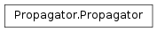
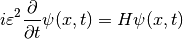
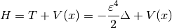

Propagator¶
About the Propagator class¶
The WaveBlocks Project
@author: R. Bourquin @copyright: Copyright (C) 2010, 2011, 2012, 2013, 2014, 2015, 2016 R. Bourquin @license: Modified BSD License
Inheritance diagram¶
Class documentation¶
-
class
WaveBlocksND.Propagator[source]¶ Propagators can numerically simulate the time evolution of quantum states
 as described by the time-dependent Schroedinger equation
as described by the time-dependent Schroedinger equation
where the semi-classical scaling parameter
 is already included.
The Hamiltonian operator
is already included.
The Hamiltonian operator  is defined as
is defined as
-
get_number_components()[source]¶ Returns: The number  components of .
components of .Raise: NotImplementedErrorThis is an abstract base class.
-
get_potential()[source]¶ Returns the potential
 used for time propagation.
used for time propagation.Returns: A MatrixPotentialsubclass instance.
-
post_propagate()[source]¶ Given the wavefunction
 at final time
at final time  ,
perform some computations exactly once after running the ordinary
time propagation and before each time simulation data will be saved.
,
perform some computations exactly once after running the ordinary
time propagation and before each time simulation data will be saved.This method does not raise an exception but instead just does nothing and returns.
-
 ,
perform some computations exactly once before running the ordinary
time propagation and after each time simulation data was saved.
,
perform some computations exactly once before running the ordinary
time propagation and after each time simulation data was saved. , calculate
the new
, calculate
the new  . We do exactly one timestep
of size
. We do exactly one timestep
of size  here.
here.